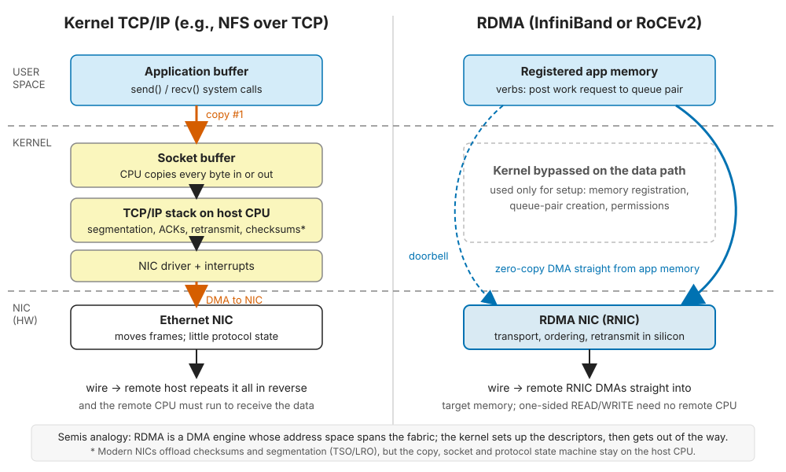
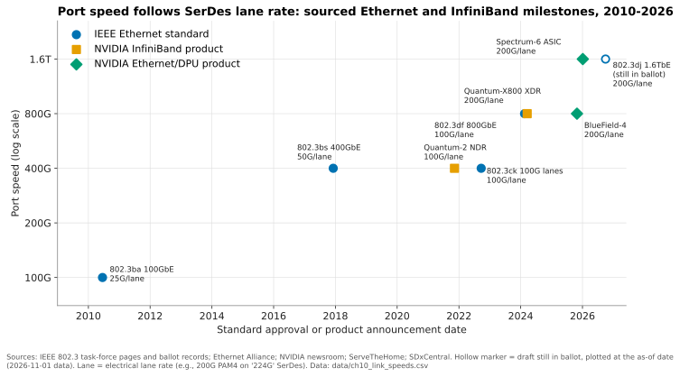

10. Datacenter networking for storage¶
Depth: L2 · Reading time: ~11 min · Last verified: 2026-11-01 Prerequisites: Block protocols and NVMe-oF · File protocols · Performance and economics metrics
TL;DR¶
- In an AI cluster the network is part of the storage system. Fabric design, congestion behaviour and NIC offloads decide delivered throughput as much as the array does.
- RDMA is DMA stretched across a fabric. The NIC moves data between registered memory regions with no kernel copies and no remote CPU.
- Ethernet has won the volume argument against InfiniBand. Dell'Oro reports Ethernet took more than two-thirds of AI back-end switch sales in 2025, up from about 20% two years earlier1. InfiniBand still anchors many of the largest training clusters.
- RoCE's weak spot is congestion. Classic RoCEv2 assumes a lossless fabric (PFC pauses plus ECN-driven DCQCN). Spectrum-X, Ultra Ethernet (UEC 1.0, June 2025) and Meta's 2026 MetaRoCE all try to escape that fragility23.
- The DPU is moving storage logic into the NIC. NVIDIA's BlueField-4 STX reference architecture (March 2026) runs storage services on an 800G DPU. Everpure is a named co-design partner, alongside nearly every competitor45.
Why this matters for Everpure strategy¶
In AI deals, the storage vendor is a guest at a table NVIDIA sets. NVIDIA also sells the NIC, the DPU, the switches and the reference architectures that say which storage plugs in where. NVIDIA's networking revenue reached a reported US$14.8 billion in the quarter to April 2026, up 199% year on year6. Storage that performs well and is certified on NVIDIA's fabric makes the shortlist.
Three questions follow. Does Everpure's Ethernet-only posture cost it InfiniBand-built clusters, or save engineering spend on a shrinking fabric? Does BlueField-hosted storage software commoditize the array controller, where Purity creates value? And which network camp should Everpure lean toward: NVIDIA, Cisco (where CEO Charles Giancarlo spent 14 years7), Arista, or UEC? See Chapter 11 for the GPU data path and Chapter 34 for certifications.
Core concepts¶
Three networks, not one¶
AI clusters run separate fabrics because traffic patterns conflict:
flowchart LR
U["Users, data sources, internet"] --> FE["Front-end network: north-south, 100-400G Ethernet"]
FE --> N1["GPU node A"]
FE --> N2["GPU node B"]
N1 <--> BE["Back-end compute fabric: east-west GPU-to-GPU, 400-800G per GPU, InfiniBand or RoCE"]
N2 <--> BE
N1 --> SN["Storage network: 2 x 200-400G per node, RoCE or TCP"]
N2 --> SN
SN --> S1["Shared file and object storage"]
SN --> S2["Context-memory tier, KV cache"]
N1 -.-> NV["Scale-up domain inside the rack: NVLink, not storage"]Figure 10.1 — Storage traffic usually rides its own fabric (or a converged front-end), sized at a fraction of the GPU-to-GPU back-end but with nastier traffic patterns.
- Front-end (north-south): user requests, ingest, management, and in many designs storage too (a "converged" front-end).
- Back-end compute fabric (east-west): GPU collectives such as all-reduce, usually one NIC per GPU. It is the costliest network and the one InfiniBand-versus-Ethernet fights are about. Meta runs a dedicated training back-end so it can evolve independently8.
- Storage network: feeds datasets, absorbs checkpoints and increasingly serves KV cache (Chapter 32).
Worked example (illustrative). Take a 1,024-GPU cluster: 128 nodes of 8 GPUs. If each GPU has an 800G back-end NIC, injection bandwidth is 128 × 8 × 800 Gb/s ≈ 819 Tb/s. If each node has 2 × 400G storage ports, the storage side is 128 × 800 Gb/s ≈ 102 Tb/s (12.8 TB/s), about one-eighth as much. Now checkpoint a 405B-parameter model with optimizer state, roughly 405e9 × 16 bytes ≈ 6.5 TB, in 60 seconds. That needs 108 GB/s ≈ 0.86 Tb/s, under 1% of the client-side storage capacity. The bottleneck is the storage-side ports: 0.86 Tb/s lands on a handful of 400G ports (two to three at line rate). On writes, many clients converge on a few storage ports; on reads, each client striping across many storage nodes receives from all of them at once. Both are incast (many senders, one receiving port), the defining pathology of storage networks.
RDMA: DMA across a fabric¶
On a chip, a DMA engine moves blocks between memory and a peripheral while the CPU does other work. RDMA (remote direct memory access) gives the NIC a DMA engine whose address space spans the fabric. The application registers a memory region once (the kernel pins it and gives the NIC the translation), then posts work requests to a queue pair by ringing a doorbell. The RDMA NIC (RNIC) does the transport in silicon.

Figure 10.2 — RDMA removes the kernel copies and the remote CPU from the data path; the kernel only sets up memory registration and queue pairs.
Three properties matter for storage:
- Zero-copy. No CPU copy between application (or GPU) memory and the wire.
- Kernel bypass. No system call, interrupt or socket per I/O.
- One-sided operations. An RDMA READ or WRITE completes without the target's CPU, which disaggregated designs rely on (Chapter 16).
Worked example (illustrative arithmetic): why the copy matters at 400G. A 400 Gb/s port carries 50 GB/s. On kernel TCP receive, the NIC DMAs 50 GB/s into kernel buffers, and the CPU then reads 50 GB/s and writes 50 GB/s to copy into user space. That is ~150 GB/s of DRAM traffic per port. A server socket with 12 channels of DDR5-4800 peaks at 12 × 38.4 ≈ 461 GB/s. Two 400G ports running TCP at line rate would use ~65% of that before the application touches a byte. With RDMA, the same two ports cost ~100 GB/s of DMA. Per-I/O overhead compounds this: at 4 KiB, 50 GB/s is ~12 million I/Os per second; at an assumed 2 µs of kernel CPU each, that is ~24 busy cores. WEKA gets a similar effect without RDMA by running its own user-space stack over DPDK9.
The transports differ in what carries the RDMA:
- InfiniBand: a purpose-built fabric with credit-based flow control (send only when the receiver has buffer) and a central subnet manager.
- RoCEv2 (2014): InfiniBand's transport inside routable UDP/IP packets on ordinary Ethernet. Meta uses it for most of its AI capacity8; Microsoft reported RDMA carrying ~70% of Azure's traffic10.
- TCP options: iWARP has lost the market; NVMe/TCP and NFS over TCP remain the "no special network" choices (Chapter 7).
| Dimension | InfiniBand (NVIDIA Quantum) | Ethernet with RoCEv2 (standard switches) | Ethernet, AI-tuned (Spectrum-X, UEC) |
|---|---|---|---|
| Loss handling | Lossless by design: link-level credits | Needs PFC to be lossless; drops hurt older RNICs badly | Spectrum-X: lossless RoCE plus adaptive routing. UEC: lossy or lossless11 |
| Congestion control | Built-in, centrally managed | DCQCN (ECN + rate cuts); hard to tune at scale8 | Telemetry-driven (Spectrum-X); new UET congestion control (UEC) |
| Multipath | Adaptive routing in switches | Per-flow ECMP hashing; elephant flows collide | Per-packet spraying, NIC reorders packets |
| In-network compute | SHARP reductions in switches | None | Limited; vendor-specific |
| Suppliers | Effectively NVIDIA only | Broadcom, NVIDIA, Cisco, Marvell, others; many OEMs | NVIDIA (Spectrum-X); Broadcom, AMD, Cisco and others (UEC) |
| Operations | Separate skills and tooling | Same as rest of datacenter, but PFC/ECN tuning is specialist | Ethernet tooling plus vendor-specific features |
| Storage support | Long native support in HPC file systems (Lustre, GPFS) | Broadest: NVMe/RoCE, NFS over RDMA, S3 over RDMA | Spectrum-X storage results from DDN, VAST, WEKA, Everpure1213 |
| 2025 AI back-end share | Under one-third of switch sales | Ethernet more than two-thirds combined1 | (included at left) |
Table 10.1 — InfiniBand sells predictability from a single vendor. Ethernet sells supplier choice and operational familiarity, and has had to bolt on what InfiniBand had natively.
Congestion control: why "lossless" matters for RoCE¶
TCP treats a drop as normal. RNICs were designed for InfiniBand's lossless links, and many generations recover with go-back-N: one drop forces retransmission of everything sent after it, so even 0.1% loss can collapse goodput. RoCE fabrics are therefore engineered not to drop:
sequenceDiagram
participant S as Storage senders
participant SW as Switch egress queue
participant R as Receiving client RNIC
S->>SW: incast burst from many storage nodes
Note over SW: queue passes ECN threshold
SW->>R: forward packets marked Congestion Experienced
R->>S: Congestion Notification Packet
S->>S: DCQCN cuts sending rate, then probes back up
Note over SW: if queue still passes PFC XOFF threshold
SW->>S: PFC PAUSE for this priority class
Note over S,SW: upstream link stops, which can spread congestion to innocent flows
SW->>S: PFC RESUME when queue drainsFigure 10.3 — ECN plus DCQCN is the first, end-to-end brake; PFC is the emergency brake that prevents drops but can freeze whole links.
- ECN + DCQCN. Switches mark packets as queues build; the receiver echoes a notification and the sender's NIC cuts its rate. DCQCN (Microsoft and Mellanox, 2015) became the default RoCE algorithm14.
- PFC (Priority Flow Control). If a queue keeps growing, the switch sends a pause frame upstream for that traffic class. Nothing drops, but the paused link stops unrelated flows too: head-of-line blocking, congestion spreading and, rarely, deadlock14.
Worked example (illustrative): lossless costs buffer. After sending PAUSE, a switch must absorb whatever is already in flight. On a 400G link with 100 m of fibre (≈0.5 µs each way), the round trip alone is about 1 µs; take ~1 µs as a floor, since switch and NIC reaction time adds more. That is 50 GB/s × 1 µs = 50 KB, plus a maximum-size frame in each direction, or about 70 KB of reserved headroom per port per lossless class. A 64-port switch reserves ~4.5 MB just for this, and twice that at 800G. In shallow-buffer AI switch ASICs, that is buffer unavailable for absorbing incast.
There are three answers. Tune harder, though Meta found DCQCN difficult to tune for its training collectives8. Make the fabric smarter: Spectrum-X pairs NVIDIA switches with SuperNICs that spray packets across all paths, reorder them and apply telemetry-based rate control. NVIDIA reports 20–48% higher storage reads than standard RoCE with DDN, VAST and WEKA12; Everpure reports +25% reads, +23% writes and better noisy-neighbour isolation on FlashBlade//EXA13 [VERIFY: search-summary only]. All are vendor-run tests. Stop needing lossless: UEC 1.0 (published 11 June 2025) defines a new transport, UET, with per-packet multipathing, out-of-order delivery and support for lossy fabrics, plus optional link-level retry and credit-based flow control211. Meta's August 2026 MetaRoCE likewise treats Ethernet as lossy, with no PFC3 [VERIFY: search-summary only].
The DPU in the storage path¶
A SmartNIC offloads fixed functions (checksums, RoCE, encryption). A DPU adds a general-purpose CPU complex and memory, so it can run a storage client, a storage target or a firewall. It is the server's I/O die becoming a programmable chiplet.
BlueField-3 is a 400G part with 16 Arm cores. BlueField-4, announced October 2025 for 2026, combines an 800G ConnectX-9 with a 64-core Grace CPU, which NVIDIA claims is 6× BlueField-3's compute1516.
flowchart LR
subgraph GPU["GPU server"]
G["GPUs, HBM"] --- C["Host CPU"]
G --- B1["BlueField DPU or SuperNIC"]
end
B1 -->|"Spectrum-X storage fabric, RDMA"| B4
subgraph STX["BlueField-4 STX storage node"]
B4["BlueField-4: storage software, KV-cache manager, encryption, tenant isolation"] --- SSD["NVMe SSDs: CMX context-memory tier"]
end
B4 -->|"miss or persist"| SH["Shared storage: FlashBlade, VAST, DDN, WEKA and others"]
B1 -.->|"offloads on client side: NVMe-oF initiator, crypto, multi-tenant policy"| CFigure 10.4 — DPUs sit at both ends of the storage path: on the client they hide storage from the host, and in STX they become the storage controller.
DPUs play three storage roles:
- Client-side offload. The DPU terminates storage protocols and enforces encryption and tenant isolation, which matters to neoclouds renting bare metal.
- Target-side controller. VAST has used BlueField DPUs as the fabric endpoints inside its DBox enclosures since 202217.
- Storage software on the DPU. At CES 2026, NVIDIA announced a BlueField-4-based context-memory storage tier for KV cache18. At GTC on 16 March 2026 it generalized this into BlueField-4 STX, a modular storage reference architecture on Vera Rubin, BlueField-4 and Spectrum-X, whose first rack-scale implementation is the CMX context-memory platform4. The named co-design partners are Cloudian, DDN, Dell, Everpure, Hitachi Vantara, HPE, IBM, MinIO, NetApp, Nutanix, VAST and WEKA5. VAST says it will run its CNode software natively on BlueField-419. Everpure says it is aligning FlashBlade//EXA with STX20.
The tension: STX makes NVIDIA the reference controller hardware, so vendors compete on software running on NVIDIA silicon, which favours software-defined players over those differentiated by controller hardware.
Link speeds and the SerDes engine underneath¶
Port speed is lane rate × lane count, and SerDes generations set the lane rate:
| SerDes class | Lane rate, modulation | 4-lane port | 8-lane port | First IEEE standard |
|---|---|---|---|---|
| 28G | 25G NRZ | 100GbE | — | 802.3bm-era 100GbE optics |
| 56G | 50G PAM4 | 200GbE | 400GbE | 802.3bs, Dec 201721 |
| 112G | 100G PAM4 | 400GbE | 800GbE | 802.3ck, Sep 202222; 802.3df, Feb 202423 |
| 224G | 200G PAM4 | 800GbE | 1.6TbE | 802.3dj, still in ballot Oct 202624 |
Table 10.2 — Each SerDes doubling yields the next port speed; PAM4 doubled bits per symbol at the price of tighter signal integrity, which is why reach shrinks and co-packaged optics arrive.

Figure 10.5 — Products now ship ahead of standards: NVIDIA's 800G InfiniBand and 1.6T-capable Ethernet silicon arrived before IEEE finished 1.6TbE.
Data: data/ch10_link_speeds.csv
The 224G generation has arrived in silicon. Quantum-X800 (March 2024), whose 800G ports run on 200G-per-lane SerDes, was among the first switches of that generation25. Broadcom's Tomahawk 6 (June 2025) and NVIDIA's Spectrum-6 (CES 2026) both reach 102.4 Tb/s per chip2627. An 800G client port ingests 100 GB/s, more than a whole mid-range array, so arrays must scale out or sit behind a caching tier.
How Everpure approaches it vs. competitors¶
| Vendor | Fabric posture (public) | NVIDIA networking alignment | Other network alignment |
|---|---|---|---|
| Everpure | Ethernet only: NVMe/RoCE on FlashArray since Purity 5.2 (2019)28; FlashBlade on RoCE at 400GbE, 16 ports per FlashBlade//S R2 in SuperPOD designs29 | SuperPOD-certified over Ethernet (2024)30; Spectrum-X testing13; STX co-design partner5 | Cisco FlashStack and Secure AI Factory3132 |
| VAST Data | NFS over RDMA; BlueField DPUs inside DBoxes17 | Spectrum-X tested12; CNode on BlueField-419 | Cisco UCS and Nexus HyperFabric33 |
| DDN | Lustre heritage on InfiniBand (EXAScaler); Infinia on Ethernet | Spectrum-X "Inferno" bundle (GTC 2025)34 | HPC system integrators |
| WEKA | DPDK user-space stack over Ethernet or InfiniBand9 | Spectrum-X tested12; STX integration | Cloud-native networking (AWS, OCI) |
| HPE | Slingshot HPC fabric; claims ~75% of UEC's transport came from Slingshot2 | STX partner5 | UEC camp |
Table 10.3 — Everpure is closely aligned with NVIDIA on Ethernet but, unlike DDN, VAST and WEKA, has no public InfiniBand story.
Steelman for Everpure's Ethernet-only stance. The market is moving its way: Ethernet has passed two-thirds of AI back-end switch sales1, one fabric family keeps engineering focused, and Cisco offers a route into enterprise AI factories.
Steelman for the competitors. In the largest InfiniBand training clusters, DDN, VAST and WEKA can attach natively and Everpure cannot [VERIFY: whether any FlashBlade model offers InfiniBand connectivity]. VAST's BlueField head start (DBoxes since 2022) gives it a natural STX story. Options a strategy team might evaluate, based on public information: whether Purity's metadata and data-reduction engines could run on BlueField-4 as an STX "personality"; how much Spectrum-X certification depth matters versus UEC neutrality as Broadcom-based fabrics grow; and whether a deeper Cisco or Arista alignment hedges against NVIDIA's dual role as partner and reference-architecture gatekeeper.
History and trajectory¶
timeline
title RDMA and AI fabrics for storage
2000 : InfiniBand 1.0 specification
2014 : RoCEv2 makes RDMA routable over UDP and IP
2015 : DCQCN congestion control published
2017 : IEEE 400GbE approved
2019 : Pure Storage ships NVMe over RoCE on FlashArray : NVIDIA agrees to buy Mellanox
2022 : VAST puts BlueField DPUs in DBoxes
2024 : IEEE 800GbE approved : Quantum-X800 InfiniBand : Meta details RoCE for AI training
2025 : Spectrum-X storage results : Tomahawk 6 ships : UEC 1.0 published : BlueField-4 announced : Ethernet passes two-thirds of AI back-end sales
2026 : BlueField-4 STX and CMX : Spectrum-6 : MetaRoCE goes lossy : 1.6TbE in final ballotFigure 10.6 — RDMA spent 20 years as an HPC niche, then AI made it the default storage transport, and the argument shifted from "InfiniBand or Ethernet" to "which kind of Ethernet".
InfiniBand began around 2000 as an effort to replace server I/O and survived in HPC, where Mellanox made it the default. Buying Mellanox (announced 11 March 2019 at US$6.9 billion; closed April 2020) gave NVIDIA both the leading InfiniBand stack and the leading RNIC line35. The Ultra Ethernet Consortium formed in July 2023 as a Linux Foundation (Joint Development Foundation) project, founded by AMD, Arista, Broadcom, Cisco, Eviden, HPE, Intel, Meta and Microsoft, to bring InfiniBand-like behaviour to open Ethernet36. NVIDIA was not a founder. SNIA's Storage.AI project (August 2025) lists UEC as a partner, hinting that storage protocols will be profiled for UET37.
Three signals for 2026–2028: (1) 1.6T client ports on 224G SerDes as 802.3dj completes24; (2) lossy-tolerant RDMA (UEC, MetaRoCE) easing PFC tuning; (3) storage software moving onto DPUs via STX, with 2H 2026 hardware4.
Numbers that matter¶
| Metric | Value | Context | Source / date |
|---|---|---|---|
| Ethernet share of AI back-end switch sales | >2/3 (2025), vs ~20% two years earlier | Dell'Oro; InfiniBand once ~80% | Dell'Oro, 2025–261 |
| NVIDIA networking revenue | US$14.8 B, +199% y/y | Quarter to 2026-04-26 | NVIDIA Q1 FY27 coverage6 |
| Spectrum-X storage read gain vs RoCE | 20–48% (writes 9–41%) | NVIDIA tests with DDN, VAST, WEKA | NVIDIA, 2025-02-0412 |
| Everpure Spectrum-X internal test | +25% read, +23% write | FlashBlade//EXA at 400G; vendor test | Everpure blog, 202613 |
| BlueField-4 | 800G, 64 Grace cores, ~6× BlueField-3 compute | 2026 with Vera Rubin | STH / CRN, 2025-101516 |
| UEC 1.0 published | 11 June 2025 | New UET transport; lossy or lossless | DCD, 2025-06-112 |
| Top switch ASIC bandwidth | 102.4 Tb/s (200G lanes) | Tomahawk 6, Spectrum-6 | Broadcom 2025-06-0326; SDxCentral 2026-0127 |
| DRAM traffic per 400G port, TCP vs RDMA | ~150 GB/s vs ~50 GB/s | One kernel copy on receive | Worked example |
| PFC headroom per 400G port | ~70 KB per lossless class | 100 m link, ~1 µs reaction | Worked example |
Conversation playbook¶
Questions for a PM
- "In which AI deals do we lose because the customer's fabric is InfiniBand?" A strong answer quantifies lost opportunities and knows whether those customers run a separate Ethernet storage network anyway, which is common.
- "What does BlueField-4 STX mean for our controller roadmap: partner, port or compete?" A strong answer separates the CMX context-memory tier from the full controller role and has a view on Purity running on Arm/Grace.
- "How much of a FlashBlade//EXA bill of materials is networking, and who supplies it?" A strong answer gives a percentage and says whether the customer's fabric is reused.
Questions for an engineer
- "Do we require PFC for RoCE, and what happens on a lossy fabric?" Strong: it names the RNIC's loss-recovery mode, the throughput drop at 0.01–0.1% loss, and recommended ECN and PFC thresholds.
- "How does a 128-client checkpoint burst behave at our storage-side ports?" Strong: it quotes incast measurements and whether packet spraying helps or hurts NFS-over-RDMA.
- "What is our UEC plan?" Strong: it knows which NICs ship UET and how NFS, NVMe-oF and S3 over RDMA would map onto it.
Don't say this:
- "RDMA is just faster Ethernet." RDMA is a transport that runs over InfiniBand or Ethernet.
- "InfiniBand is dead." It still anchors many of the largest training clusters and grew strongly in Q2 20251.
- "Lossless means no congestion." PFC prevents drops by pausing links, which can spread congestion.
- "800G means 800 GB/s." It is 800 Gb/s, which is 100 GB/s before protocol overhead.
- "A DPU is a SmartNIC." A DPU runs general-purpose software; that distinction is the whole STX argument.
Going deeper (optional, L3 pointers)¶
- Zhu et al., SIGCOMM 2015: DCQCN's fluid model and buffer tuning14.
- Gangidi et al., SIGCOMM 2024: Meta's RoCE topology, routing and DCQCN experience8.
- UEC Specification 1.0 at ultraethernet.org: UET semantic, packet-delivery and congestion-control sublayers.
- InfiniBand Architecture Specification Vol. 1, Annex A17 (RoCEv2) for the wire format.
Key terms¶
- RDMA / RNIC — remote direct memory access; the NIC that implements it in hardware.
- RoCEv2 — RDMA transport carried in UDP/IP over Ethernet.
- PFC, ECN, DCQCN — pause frames, congestion marking and RoCE rate control.
- Incast — many senders converging on one receiver port.
- DPU / SuperNIC — NIC with its own CPU complex; NVIDIA's AI-tuned NIC.
- UEC / UET — Ultra Ethernet Consortium and its transport.
- SerDes, PAM4 — the lanes and four-level signalling behind port speeds.
- See the glossary for the rest.
Sources¶
-
Dell'Oro Group, "Ethernet more than doubles size of InfiniBand as the leading fabric for AI scale-out networks in 2025," 2026; and "2026 predictions: data center switch, front-end and AI back-end networks," 2026. https://www.delloro.com/news/ethernet-more-than-doubles-size-of-infiniband-as-the-leading-fabric-for-ai-scale-out-networks-in-2025/ ; https://www.delloro.com/2026-predictions-data-center-switch-frontend-ai-backed-networks/ (retrieved 2026-11-01; search-summary only: the 4Q25 release says Ethernet took more than two-thirds of AI-cluster switch sales in the quarter and the full year, against InfiniBand's ~80% two years earlier; corroborated by insideHPC, "Report: AI Back-End Networks Continue Shift to Ethernet," 2025-12, https://insidehpc.com/2025/12/report-ai-back-end-networks-continue-shift-to-ethernet/). ↩↩↩↩↩
-
DatacenterDynamics, "Ultra Ethernet Consortium launches 1.0 specification," 2025-06-11. https://www.datacenterdynamics.com/en/news/ultra-ethernet-consortium-launches-10-specification/ ; Phoronix, "Ultra Ethernet Consortium Publishes UEC 1.0 Specification," 2025-06-11. https://phoronix.com/news/Ultra-Ethernet-1.0-UEC ; HPE Community, "Ultra Ethernet Consortium (UEC) 1.0 specification launch," 2025-06. https://community.hpe.com/t5/high-performance-computing/ultra-ethernet-consortium-uec-1-0-specification-launch/td-p/7244476 (retrieved 2026-11-01). ↩↩↩↩
-
Meta Engineering, "MetaRoCE: RDMA transport for AI over Ethernet," 2026-08-24. https://engineering.fb.com/2026/08/24/networking-traffic/metaroce-rdma-transport-ai-ethern (retrieved 2026-11-01; search-summary only). ↩↩
-
NVIDIA Investor Relations, "NVIDIA Launches BlueField-4 STX Storage Architecture With Broad Industry Adoption," 2026-03-16. https://investor.nvidia.com/news/press-release-details/2026/NVIDIA-Launches-BlueField-4-STX-Storage-Architecture-With-Broad-Industry-Adoption/default.aspx (retrieved 2026-11-01). ↩↩↩
-
StorageNewsletter, "Nvidia GTC 2026: Nvidia Launches BlueField-4 STX Storage Architecture With Broad Industry Adoption," 2026-03-17. https://www.storagenewsletter.com/2026/03/17/nvidia-gtc-2026-nvidia-launches-bluefield-4-stx-storage-architecture-with-broad-industry-adoption/ (retrieved 2026-11-01). ↩↩↩↩
-
HPCwire (NVIDIA release), "NVIDIA Announces Financial Results for First Quarter Fiscal 2027," 2026-05. https://www.hpcwire.com/off-the-wire/nvidia-announces-financial-results-for-1st-quarter-fiscal-2027/ ; SDxCentral, "Nvidia gets greener, edging 200% networking revenue bump," 2026-05. https://www.sdxcentral.com/news/nvidia-gets-greener-edging-200-networking-revenue-bump/ (retrieved 2026-11-01; networking figure from secondary coverage, two sources agree). ↩↩
-
SEC, "Pure Storage Form 8-K," 2017-08. https://www.sec.gov/Archives/edgar/data/0001474432/000162828017008861/pstg-8kq22017.htm (retrieved 2026-11-01). ↩
-
A. Gangidi et al. (Meta), "RDMA over Ethernet for Distributed AI Training at Meta Scale," ACM SIGCOMM 2024, 2024-08-05. https://engineering.fb.com/wp-content/uploads/2024/08/sigcomm24-final246.pdf (retrieved 2026-11-01). ↩↩↩↩↩
-
WEKA, "Networking in WEKA" (v5.0 documentation), n.d. https://docs.weka.io/5.0/weka-system-overview/networking-in-wekaio (retrieved 2026-11-01). ↩↩
-
W. Bai (Microsoft), "RDMA at hyperscale: experience and future directions," APNet 2023 industry talk, 2023-06. https://conferences.sigcomm.org/events/apnet2023/slides/apnet23/Industry/bai-1500-0630.pdf (retrieved 2026-11-01). ↩
-
SNIA, "UEC Overview" (Carlson), Regional SDC 2025, 2025-05. https://www.snia.org/sites/default/files/2025-05/SNIA-RSDC2025-Carlson-UEC-Overview.pdf ; OpenFabrics Alliance, "Webinar 4: Slingshot to Ultra Ethernet," 2025. https://www.openfabrics.org/wp-content/uploads/2025_webinars/webinar_4/Webinar-4-Slingshot-to-Ultra-Ethenet-Slides.pdf (retrieved 2026-11-01). ↩↩
-
NVIDIA Developer Blog, "Accelerating AI Storage by up to 48% with NVIDIA Spectrum-X Networking Platform and Partners," 2025-02-04. https://developer.nvidia.com/blog/accelerating-ai-storage-by-up-to-48-with-nvidia-spectrum-x-networking-platform-and-partners/ (retrieved 2026-11-01). ↩↩↩↩↩
-
Everpure blog, "Infrastructure Is the New Accelerator: Why Consistent High Bandwidth and Low Latency Are Critical for AI Factories," n.d. (2026). https://blog.everpuredata.com/products/infrastructure-is-the-new-accelerator/ (retrieved 2026-11-01; search-summary only). ↩↩↩↩
-
Y. Zhu et al. (Microsoft, Mellanox), "Congestion Control for Large-Scale RDMA Deployments," ACM SIGCOMM 2015, 2015-08. https://www.microsoft.com/en-us/research/publication/congestion-control-for-large-scale-rdma-deployments/ (retrieved 2026-11-01). ↩↩↩
-
ServeTheHome, "NVIDIA BlueField-4 with 64 Arm cores and 800G networking announced for 2026," 2025-10. https://www.servethehome.com/nvidia-bluefield-4-with-64-arm-cores-and-800g-networking-announced-for-2026/ (retrieved 2026-11-01). ↩↩
-
CRN Asia, "Nvidia reveals BlueField-4 DPU, packed with 64-core Grace CPU for AI data centers," 2025-10. https://www.crnasia.com/news-network/2025/nvidia-reveals-bluefield-4-dpu (retrieved 2026-11-01). ↩↩
-
Blocks & Files, "VAST Data launches Ceres storage drive enclosure," 2022-03-22. https://blocksandfiles.com/?p=37064 (retrieved 2026-11-01). ↩↩
-
NVIDIA Newsroom, "NVIDIA BlueField-4 Powers New Class of AI-Native Storage Infrastructure for the Next Frontier of AI," 2026-01-05. https://nvidianews.nvidia.com/news/nvidia-bluefield-4-powers-new-class-of-ai-native-storage-infrastructure-for-the-next-frontier-of-ai (retrieved 2026-11-01). ↩
-
StorageNewsletter, "CES 2026: Vast Data Redesigns AI Inference Architecture for the Agentic Era with Nvidia," 2026-01-07. https://www.storagenewsletter.com/2026/01/07/ces-2026-vast-data-redesigns-ai-inference-architecture-for-the-agentic-era-with-nvidia/ (retrieved 2026-11-01). ↩↩
-
StorageReview, "Everpure aligns FlashBlade//EXA with NVIDIA AI factory architectures, previews Data Stream," 2026-03-16. https://www.storagereview.com/news/everpure-aligns-flashblade-exa-with-nvidia-ai-factory-architectures-previews-data-stream (retrieved 2026-11-01). ↩
-
Lightwave (Ethernet Alliance), "Ethernet Alliance salutes approval of IEEE 802.3bs 200 Gigabit Ethernet, 400 Gigabit Ethernet standard," 2018-01. https://lightwaveonline.com/articles/2018/01/ethernet-alliance-salutes-approval-of-ieee-802-3bs-200-gigabit-ethernet-400-gigabit-ethernet-standard.html (retrieved 2026-11-01). ↩
-
IEEE 802.3, "100 Gb/s per Lane Electrical Study Group / P802.3ck," n.d. https://ieee802.org/3/100GEL/index.html (retrieved 2026-11-01; 2022-09-21 approval date from search summary). ↩
-
IEEE 802.3, "IEEE P802.3df 400 Gb/s and 800 Gb/s Ethernet Task Force," n.d. (approval 2024-02-16). https://ieee802.org/3/df/ (retrieved 2026-11-01). ↩
-
Network World, "The race to 1.6T: Ethernet and coherent optics tackle AI's bandwidth crunch," 2026-09-11. https://www.networkworld.com/article/4221167/the-race-to-1-6t-ethernet-and-coherent-optics-tackle-ais-bandwidth-crunch.html ; IEEE 802 LMSC email archive (802.3dj ballot status), 2026. https://ieee802.org/email/stds-802-lmsc/msg00846.html (retrieved 2026-11-01). ↩↩
-
NVIDIA Newsroom, "NVIDIA Announces New Switches Optimized for Trillion-Parameter GPU Computing and AI Infrastructure," 2024-03-18. https://nvidianews.nvidia.com/news/networking-switches-gpu-computing-ai (retrieved 2026-11-01). ↩
-
Broadcom, "Broadcom Ships Tomahawk 6: World's First 102.4 Tbps Switch," 2025-06-03. https://investors.broadcom.com/news-releases/news-release-details/broadcom-ships-tomahawk-6-worlds-first-1024-tbps-switch (retrieved 2026-11-01). ↩↩
-
SDxCentral, "Nvidia debuts Spectrum-6 switches to power next-gen AI networking," 2026-01. https://www.sdxcentral.com/news/nvidia-debuts-spectrum-6-switches-to-power-next-gen-ai-networking/ (retrieved 2026-11-01). ↩↩
-
Converge (CRN), "Pure Storage pushes all-flash performance with NVMe-oF RoCE," 2019-02-19. https://convergetp.com/2019/02/19/pure-storage-pushes-all-flash-performance-with-nvme-of-roce-intros-flash-storage-for-cloud-backups/ (retrieved 2026-11-01). ↩
-
Everpure, "Networking for NVIDIA AI Factory with Everpure," n.d. https://support.everpuredata.com/r/nvidia/networking-for-nvidia-ai-factory-with-everpure (retrieved 2026-11-01; search-summary only). ↩
-
Blocks & Files, "Pure Storage's FlashBlade//S500 gains Nvidia SuperPOD certification," 2024-11-18. https://www.blocksandfiles.com/ai-ml/2024/11/18/pure-storages-flashblade/s500-gains-nvidia-superpod-certification/1598641 (retrieved 2026-11-01). ↩
-
Cisco Investor Relations, "Cisco to Deliver Secure AI Infrastructure with NVIDIA," 2025-03-18. https://investor.cisco.com/news/news-details/2025/Cisco-to-Deliver-Secure-AI-Infrastructure-with-NVIDIA/default.aspx (retrieved 2026-11-01). ↩
-
StorageNewsletter, "Pure Storage and Cisco Deliver AI Factories for the Enterprise with Nvidia," 2025-11-07. https://www.storagenewsletter.com/2025/11/07/pure-storage-and-cisco-deliver-ai-factories-for-the-enterprise-with-nvidia/ (retrieved 2026-11-01). ↩
-
Cisco, "Nexus HyperFabric and VAST Data at-a-glance," n.d. https://www.cisco.com/c/en/us/products/collateral/data-center-networking/nexus-hyperfabric/nexus-hyperfabric-vast-data-aag.pdf (retrieved 2026-11-01). ↩
-
Blocks & Files, "Storage vendors rally behind Nvidia at GTC 2025," 2025-03-18. https://www.blocksandfiles.com/ai-ml/2025/03/18/storage-vendors-rally-behind-nvidia-at-gtc-2025/1602277 (retrieved 2026-11-01). ↩
-
NVIDIA and Mellanox, "NVIDIA to Acquire Mellanox for $6.9 Billion" (joint press release, Exhibit 99.1 to NVIDIA Form 8-K), 2019-03-11. https://www.sec.gov/Archives/edgar/data/1045810/000104581019000031/ex991jointpr.htm (retrieved 2026-11-01; search-summary only, sec.gov not fetchable; closing c. 2020-04-27 per NVIDIA). ↩
-
Linux Foundation, "Leading Cloud Service, Semiconductor, and System Providers Unite to Form Ultra Ethernet Consortium," 2023-07-19. https://www.linuxfoundation.org/press/announcing-ultra-ethernet-consortium-uec (retrieved 2026-11-01; search-summary only). ↩
-
SNIA, "SNIA Announces Storage.AI," 2025-08-04. https://www.snia.org/news_events/newsroom/announces-storageai (retrieved 2026-11-01). ↩